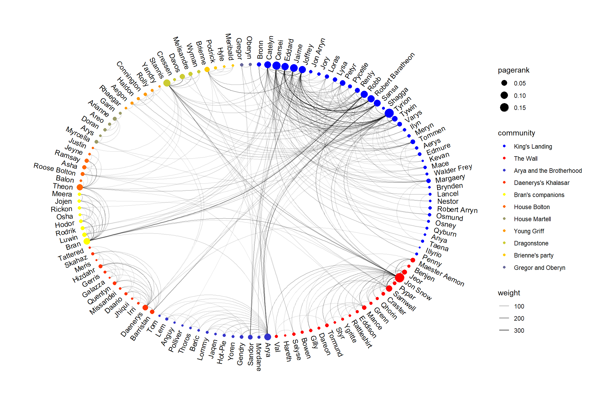

This is the second post of a character network analysis of George R. R. Martin’s A Song Of Ice and Fire (ASOIAF) series as well as my first submission to the R Bloggers community. A warm welcome to all readers out there! In my first post, I touched on the Tidygraph package to manipulate dataframes and ggraph for network visualisation as well as some tricks to fix the position of nodes when ploting multiple graphs containing the same node set and labeling based on polar coordinates. In this post, we combine the plots together and use gganimate to visualise all 5 books.
The ASOIAF Network
I carry on from the end of the previous post and will skip through the pre-processing and cleaning steps.
Previously, we created a process_graph function which pre-processes our input data into the tidygraph format and calculated the page-rank scores for each character at the book level. Subsequently, we join these graphs and used the full graph to identify relevant communities within the ASOIAF universe and key characters.
The full graph is used to define the coordinate of each node and their position in the final plot. A plot_graph function was created to take in a tidygraph table and produces the network visualisation. Here is the code which we used to generate the network graph.
full_layout <- create_layout(graph = full_graph, layout = "linear", circular = T)
xmin <- min(full_layout$x)
xmax <- max(full_layout$x)
ymin <- min(full_layout$y)
ymax <- max(full_layout$y)
plot_graph <- function(graph) {
graph <- graph %>%
left_join(full_layout[full_layout$Id %in% V(graph)$Id, c('x', 'y', 'Id', 'community', 'pagerank')],
by = 'Id')
graph %>%
ggraph(layout = "manual", x = x, y = y, circular = T) +
geom_edge_arc(aes(alpha = weight)) +
geom_node_point(aes(color = community, size = pagerank)) +
# data = filter(graph %>% as_tibble(), x>0),
geom_node_text(aes(label = Label_short, x = x * 1.04, y = y* 1.04,
angle = ifelse(atan(-(x/y))*(180/pi) < 0,
90 + atan(-(x/y))*(180/pi),
270 + atan(-x/y)*(180/pi)),
hjust = ifelse(x > 0, 0 ,1)), size = 3.5) +
theme_graph() +
expand_limits(x = c(xmin-0.2, xmax+0.2), y = c(ymin-0.2, ymax+0.2))
}Let’s test it out on the entire ASOIAF universe and see how it looks like:
plot_graph(full_graph %>% select(-community, -pagerank)) +
scale_color_manual(values=colorRampPalette(c("blue", "yellow", "red"))(11)[c(1,11,2,10,6,9,4,8,5,7,3)],
labels=c("King's Landing", "The Wall",
"Arya and the Brotherhood", "Daenerys's Khalasar",
"Bran's companions", "House Bolton",
"House Martell", "Young Griff", "Dragonstone",
"Brienne's party", "Gregor and Oberyn"))
I made two main changes to the above plot compared to the previous post. First, I use a cut-off threshold of 0.8 instead of 0.75 to filter out the less relevant characters. To make it easier to infer the communities, I also mapped each community to a custom colour palette. This is generated using the colorRampPalette function but I rearranged the palette to maximise the perceptual difference between each community and make them easily distinguishable.
The characters fall into 11 relatively distinct communities. The biggest group is the King’s Landing community coloured in blue. Visually, this is also the most dense area of the plot and many of the cross-community interaction is fostered by characters within the King’s Landing group. This also explains the high page-rank score of the characters within this group.
Next, we have the Night’s Watch and wildlings which I termed as ‘The Wall’. Unsurprisingly, Jon Snow is the key character within this community having ties with almost every one of them and links to the broader ASOIAF universe.
The names of the other communities can be seen in the above plot. We can see the role of the Stark family in the story with each character being a key member of a different community. The network plot also illustrates the narrative technique employed by George R. R. Martin within the series. Many of the characters interact within their small communities and but are weaved into the broader narrative by their connections to certain key players. This allows him to build detailed character profiles while still creating an illusion of an extremely large universe. The clearest examples of this is Daenerys’s Khalasar and Arya’s network which exists in very isolated communities but are connected to the broader story mainly through Daenerys and Arya only.
Another interesting question that one might ask is how the current network structure differ between a cut-off threshold of 0.8 compared to 0.75 used in the previous post. The plot based on a threshold of 0.75 is shown below:

There are 4 other meaningful segments compared to the previous graph and they roughly correspond to the Riverlands group, house Greyjoy, Harrenhal guards (Gregor and Oberyn are in that group) and the Citadel. Here is an interesting observation: Arya’s kill list creates numerous co-occurrence of Gregor, Sandor, Polliver and the Tickler which is picked up by the network plot as a distinct community.
A network animation
Separate plots for each book is nice but this makes it quite difficult to compare the network structure across books. One possible solution is to combine them all into an animation. gganimate is an extension to ggplot that allows animations to be created relatively easily.1
With gganimate doing a simple transition can be done by appending transition_manual to the existing ggplot object and calling animate on it. Basically, anything that works with a facet_wrap can be converted to a simple animation. In the example below, I included transition_manual(book) to generate an animation that shows each book every 2 seconds. animate by default renders an animated gif which we can simply embed on the website.
library(gganimate)
plot_graph <- function(graph) {
graph <- graph %>%
left_join(full_layout[full_layout$Id %in% V(graph)$Id, c('x', 'y', 'Id', 'community', 'pagerank')],
by = 'Id')
graph %>%
ggraph(layout = "manual", x = x, y = y, circular = T) +
# Need to use link0 for gganimate
#geom_edge_arc(aes(alpha = weight)) +
geom_edge_link0(aes(alpha = weight)) +
geom_node_point(aes(color = community, size = pagerank)) +
# data = filter(graph %>% as_tibble(), x>0),
geom_node_text(aes(label = Label_short, x = x * 1.04, y = y* 1.04,
angle = ifelse(atan(-(x/y))*(180/pi) < 0,
90 + atan(-(x/y))*(180/pi),
270 + atan(-x/y)*(180/pi)),
hjust = ifelse(x > 0, 0 ,1))) +
theme_graph() +
expand_limits(x = c(xmin-0.2, xmax+0.2), y = c(ymin-0.2, ymax+0.2))
}
p <- plot_graph(
full_graph %>%
select(-community, -pagerank)
)
p <- p +
scale_color_manual(values=colorRampPalette(c("blue", "yellow", "red"))(11)[c(1,11,2,10,6,9,4,8,5,7,3)],
labels=c("King's Landing", "The Wall",
"Arya and the Brotherhood", "Daenerys's Khalasar",
"Bran's companions", "House Bolton",
"House Martell", "Young Griff", "Dragonstone",
"Brienne's party", "Gregor and Oberyn")) +
ggtitle('ASOIAF Character Network', subtitle = 'Book {current_frame}') +
transition_manual(book)
animate(p, 100, 10, width = 1050, height = 700)
The above animation looks quite nice, but the transition between plots seem a little sudden. To smoothen the transition, we can transform the discrete events into continuous ones and use transition_events to control the rate of transition. The solution below is adapted from this gist. I experimented with various methods of converting the discrete book intervals to continuous events. Eventually, it seems that creating a time event out of the edge weights seem to work quite well. The weights are scaled to range from 0 to 60 and are used as minutes while the book number takes the place of the hour of the day. enter_length and exit_length is set to 60 minutes to create some overlap across books so that characters which remain connected across books do not appear to fade in and out unnecessarily. Here is the final code and output.
p <- plot_graph(
full_graph %>%
select(-community, -pagerank) %>%
activate(edges) %>%
mutate(tweight = ifelse(weight >100, 100, weight)) %>%
group_by(book) %>%
mutate(scaled_weight = (tweight - min(tweight)) / (max(tweight) - min(tweight)) * 60,
book_start_time = as.POSIXct((paste0('2018-10-10', book, ":00")), format = "%Y-%m-%d %H:%M"),
book_end_time = as.POSIXct((paste0('2018-10-10', book, ":", scaled_weight)), format = "%Y-%m-%d %H:%M")) %>%
ungroup() %>%
mutate(book_end_time = if_else(is.na(book_end_time), as.POSIXct((paste0('2018-10-10', book+1, ":00")), format = "%Y-%m-%d %H:%M"), book_end_time)) %>%
activate(nodes)
)
fade_edge <- function(x) {
x$edge_alpha = 0
x$edge_width = 0
x
}
p2 <- p +
scale_color_manual(values=colorRampPalette(c("blue", "yellow", "red"))(11)[c(1,11,2,10,6,9,4,8,5,7,3)],
labels=c("King's Landing", "The Wall",
"Arya and the Brotherhood", "Daenerys's Khalasar",
"Bran's companions", "House Bolton",
"House Martell", "Young Griff", "Dragonstone",
"Brienne's party", "Gregor and Oberyn")) +
ggtitle('ASOIAF Character Network', subtitle = 'Book {as.numeric(format(frame_time, "%H"))}') +
transition_events(start = book_start_time,
end = book_end_time,
enter_length = hms::hms(minutes = 60), exit_length = hms::hms(minutes = 60)) +
enter_manual(fade_edge) +
exit_manual(fade_edge)
animate(p2, 100, 10, width = 900, height = 600)
The animated plot shows quite clearly how the narrative of ASOIAF has evolved through the books. In A Game of Thrones, the first book, the plot mainly revolves around the characters in King’s Landing but as the series progresses, we see a lot more cross-community relationships being formed. It should also be noted that the mortality rate of characters in that community is especially high and there are much fewer of them at the end of book 5 then at the start of the series.
Conclusion
I hope you enjoyed this network view of the ASOIAF series and I can’t wait to update it when the Winds of Winter is released and see how it further changes over time. My guess is that characters in the North would gain more prominence and we should see new communities budding off from there. Maybe a new community of white walkers would also form though I wonder what their names would be. The arrival of Daenerys Targaryen to Westeros and probable meeting of all the ‘kings’ would also help create more links between the different communities.
On the data science side, I hope this post gives you a glimpse of how network analysis can be to other less well known areas such as texts and it is reasonably straightforward with the help of so many R packages. In short, words are not really wind and the context which they are situated in tells us a lot on how they are all connected to each other.
Note: There has been a major re-write of the API since Thomas Pederson took over from David Robinson so many of the existing tutorials out there are no longer compatible with the new one. I use the new API in the code below. There seems to be some issues with the integration of
ggraphandgganimateas well. At the time of this post, I can only getgeom_edge_link0to work whilegeom_edge_linkandgeom_edge_arcgives an error message. I filed a github issue so hopefully these teething issues get resolve soon.↩